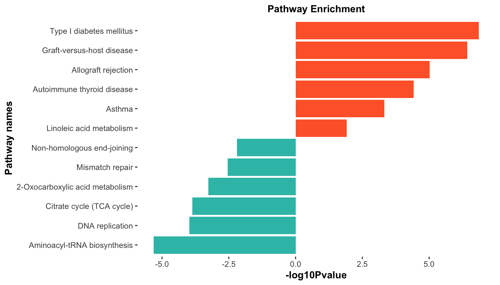
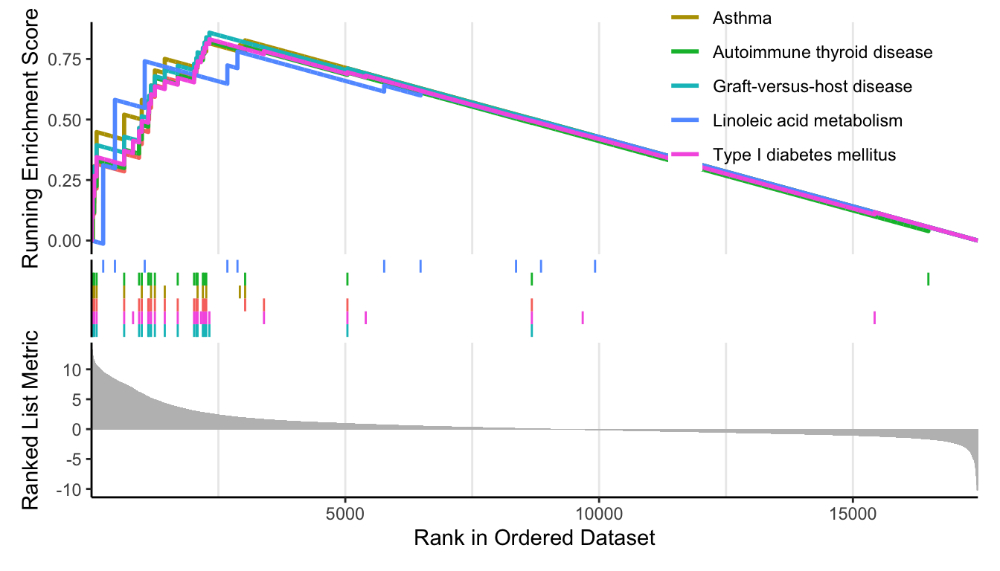
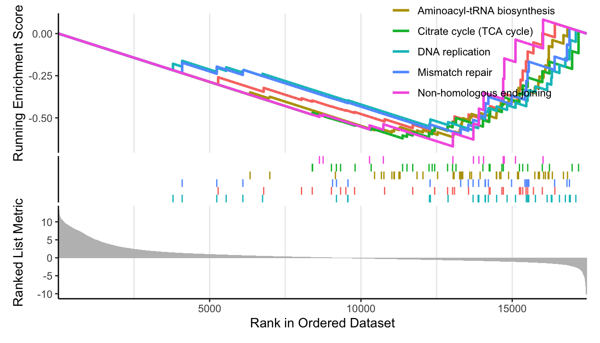

第 9 章 GSEA 富集分析
9.1 加载数据
# 加载包
library(org.Hs.eg.db)
library(clusterProfiler)
library(ggstatsplot)
library(ggplot2)
load(file = "Rdata/DEG_edgeR_reg.Rdata")
colnames(total)
## [1] "SYMBOL" "baseMean" "baseMeanA" "baseMeanB"
## [5] "foldChange" "log2FoldChange" "PValue" "PAdj"
## [9] "FDR" "falsePos" "s_MiaFRFP_1" "s_MiaFRFP_2"
## [13] "s_MiaFRFP_3" "s_Part1Lag_1" "s_Part1Lag_2" "s_Part1Lag_3"
## [17] "regulation"
# 输出文件夹
OUT_FOLDER <- "Anno_enrichment/GSEA"
dir.create(OUT_FOLDER, showWarnings = FALSE)
# 数据预处理
nrDEG <- total[, c("SYMBOL","log2FoldChange", "FDR")]
colnames(nrDEG) <- c("SYMBOL", 'log2FC', 'FDR')
gene <- bitr(nrDEG$SYMBOL,
fromType = "SYMBOL",
toType = "ENTREZID",
OrgDb = org.Hs.eg.db)
head(gene)
## SYMBOL ENTREZID
## 1 HLA-DQA1 3117
## 2 HLA-DQB2 3120
## 3 LCP1 3936
## 4 CSF1R 1436
## 5 MMP14 4323
## 6 LYZ 4069
head(nrDEG)
## SYMBOL log2FC FDR
## 1 HLA-DQA1 11.68556 5.873859e-07
## 2 HLA-DQB2 10.52826 5.873859e-07
## 3 LCP1 11.80748 5.873859e-07
## 4 CSF1R 11.49362 5.873859e-07
## 5 MMP14 10.99624 5.873859e-07
## 6 LYZ 10.73787 7.767493e-07
nrDEG <- nrDEG[nrDEG$SYMBOL %in% gene$SYMBOL,]
nrDEG$ENTREZID <- gene$ENTREZID[match(nrDEG$SYMBOL, gene$SYMBOL)]
geneList <- nrDEG$log2FC
names(geneList) <- nrDEG$ENTREZID
geneList <- sort(geneList, decreasing = T)
head(geneList)
## 54947 7078 7048 3553 219285 56944
## 13.29961 13.26271 12.84913 12.69912 12.67004 12.567609.2 GSEA 分析
str(geneList)
## Named num [1:17462] 13.3 13.3 12.8 12.7 12.7 ...
## - attr(*, "names")= chr [1:17462] "54947" "7078" "7048" "3553" ...
kk_gse <- gseKEGG(geneList = geneList,
organism = 'hsa',#按需替换
minGSSize = 10,
pvalueCutoff = 0.99,
verbose = FALSE)
kk <- DOSE::setReadable(kk_gse, OrgDb='org.Hs.eg.db', # 将基因ID换为SYNBOL
keyType='ENTREZID')#按需替换
kk@result$Description <- gsub(' - Mus musculus \\(house mouse\\)',
'', kk@result$Description )
head(kk@result$Description)
## [1] "Systemic lupus erythematosus" "Antigen processing and presentation"
## [3] "Type I diabetes mellitus" "Graft-versus-host disease"
## [5] "Leishmaniasis" "Staphylococcus aureus infection"
tmp=kk@result #～～～取前6个上调通路和6个下调通路～～～
up_k <- kk[head(order(kk$enrichmentScore,decreasing = T)),];up_k$group=1
down_k <- kk[tail(order(kk$enrichmentScore,decreasing = T)),];down_k$group=-1
dat <- rbind(up_k, down_k)
dat$`-log10Pvalue` <- -log10(dat$pvalue)*dat$group
dat <- dat[order(dat$`-log10Pvalue`, decreasing = F),]
ggplot(dat, aes(x=reorder(Description, order(`-log10Pvalue`, decreasing = F)),
y=`-log10Pvalue`, fill=group)) +
geom_bar(stat="identity") +
scale_fill_gradient(low="#34bfb5",high="#ff6633",guide = FALSE) +
labs(x="Pathway names", y="-log10Pvalue") +
coord_flip() +
theme_ggstatsplot()+
theme(plot.title = element_text(size = 10, hjust = 0.5),
axis.text = element_text(size = 8),
panel.grid = element_blank()
)+
ggtitle("Pathway Enrichment")
up_k <- kk[head(order(kk$enrichmentScore,decreasing = T)),];up_k$group=1
down_k <- kk[tail(order(kk$enrichmentScore,decreasing = T)),];down_k$group=-1
p_up <- enrichplot::gseaplot2(kk, geneSetID = head(rownames(up_k)));p_up
